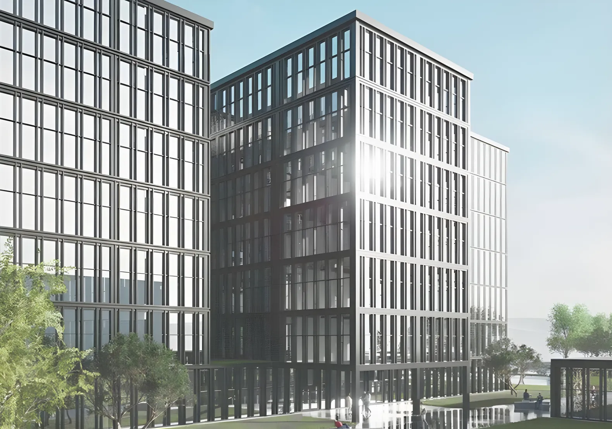
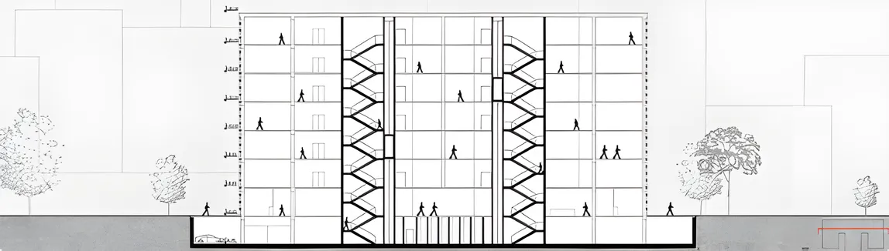
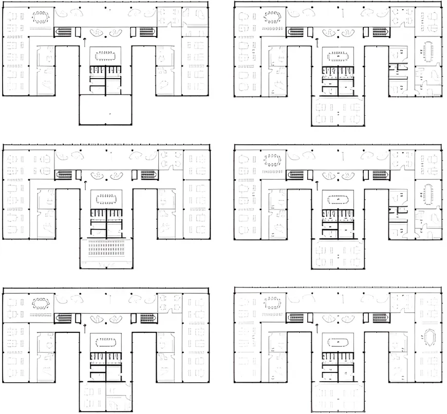
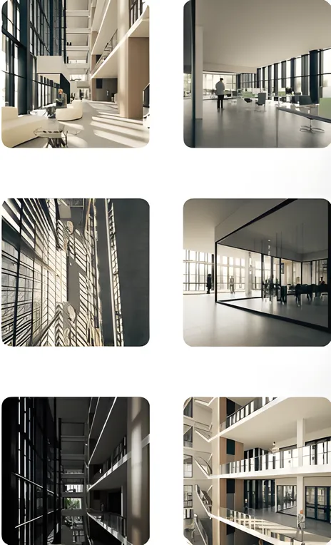
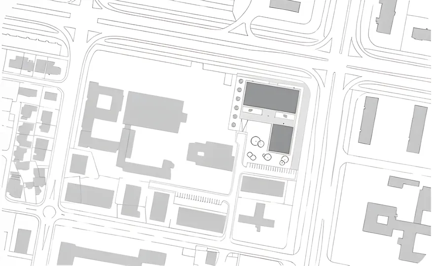

Public Building
Јавна административна зграда и мал павилјон што оформуваат уреден предпростор отворен кон градот.

- Тип
- Јавна и административна
- Локација
- Скопје
- Статус
- Идејно решение
Граѓански центар што ги обединува административните услуги, работните места и заедничките простори во една композиција. Повеќекатниот главен волумен и помалиот павилјон оформуваат отворен, уреден предпростор.
Предпросторот го прави односот помеѓу институцијата и градот гостопримлив. Внатре, јавната сала, изложбениот простор и кафулето се во приземјето, а канцелариите и салите за состаноци над нив.




